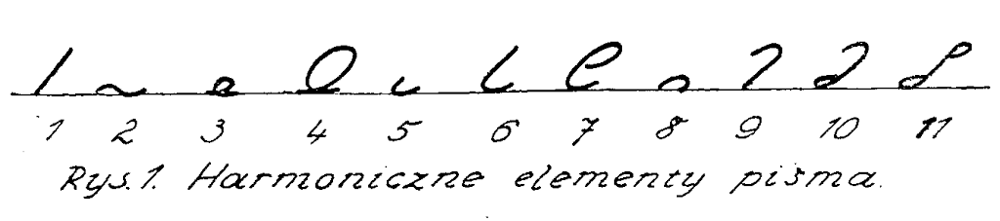
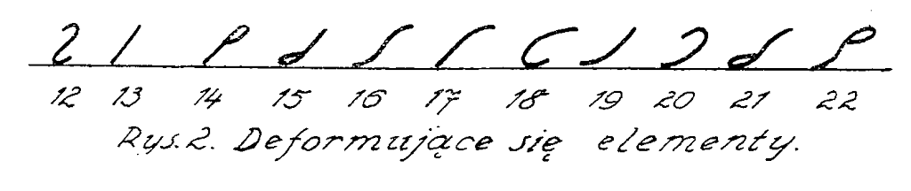
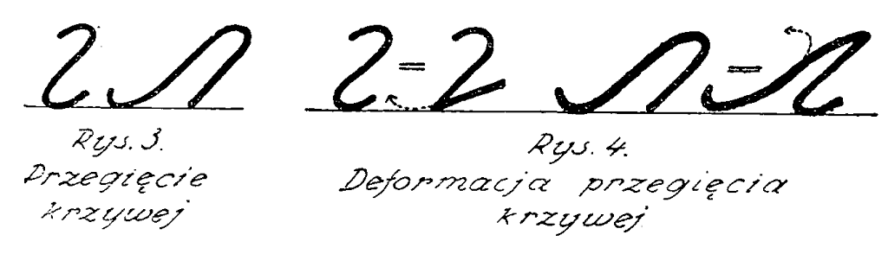
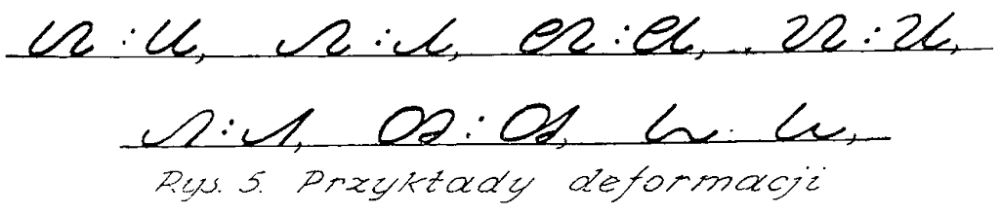
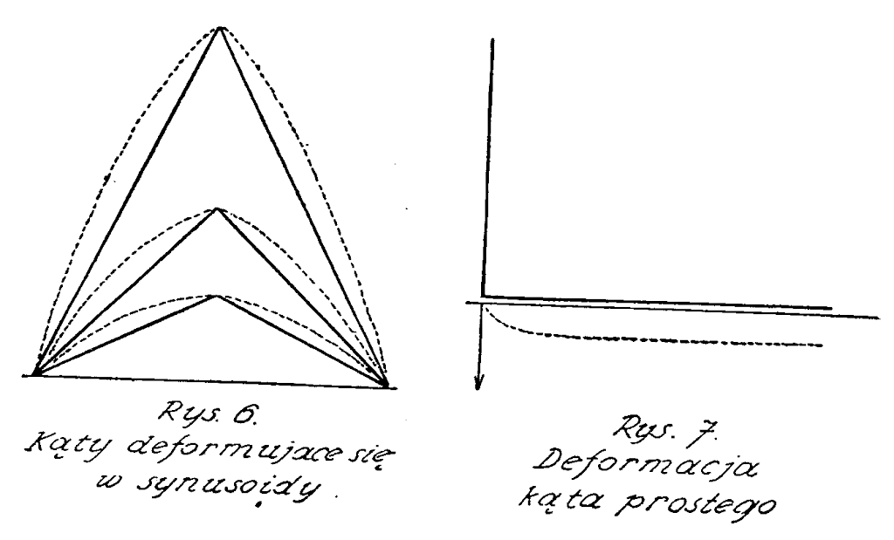
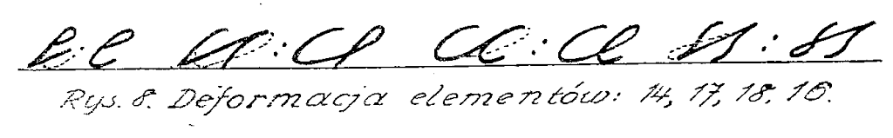

International
InternationalTeoria deformacji
2011-03-29 | autor: flamenco108Przedstawiam poniżej kolejny artykuł z cyklu teoretycznego. Niektóre fragmenty mogą być niezrozumiałe dla czytelnika, który wcześniej nie zapoznał się z jakimś podręcznikiem do stenografii systemu Polińskiego, ale wszyscy mogą się zorientować, jak szczegółowo projektanci systemów podchodzą do każdej kreseczki, każdego ruchu ręką. Warto również zapoznać się choćby z ilustracjami z cytowanej w poniższym artykule pracy Sokołowa “Teoretyczne Podstawy Stenografii”, mam tu dostępną wersję z roku 1937 (13MB).
Proszę także wziąć poprawkę na wiernopoddańczą wymowę tego tekstu: został opublikowany w roku 1953, co powinno być wystarczającym wyjaśnieniem i usprawiedliwieniem.
TEORIA DEFORMACJI - FRANCISZEK KOTAS (Cieszyn)
Największą zdobyczą stenografii radzieckiej jest stworzenie teorii deformacji przez najwybitniejszego teoretyka stenografii radzieckiej, N. N. Sokołowa, i zastosowanie jej w radzieckim jednolitym systemie stenograficznym utworzonym przez tegoż teoretyka.
Celem niniejszego artykułu jest popularne przedstawienie tej teorii czytelnikom “Stenografa Polskiego”, z pominięciem zawiłych dowodów naukowych, i zachęcenie stenografów interesujących się problemami teorii stenografii do bliższego zapoznania się z problemem deformacji na podstawie dzieła N. N. Sokołowa “Teoreticzeskie Osnowy Stenografii” (str. 81-108), które można nabyć w każdej księgarni.
Tak “Kurs Stenografii” (1948) jak i “Teoreticzeskie Osnowy Stenografii” (1949) tworzą podstawę, na której opierała się praca zespołu roboczego nad zastosowaniem radzieckiego jednolitego systemu stenograficznego do języka polskiego. Przyjmując brak znajomości radzieckiego systemu stenograficznego u przeciętnego czytelnika “Stenografa Polskiego” posługuję się przy tłumaczeniu teorii deformacji analogicznymi znakami stenograficznymi naszych systemów stenograficznych. Podawane cytaty i stronice odnoszą się do dzieła “Teoreticzeskie Osnowy Stenografii” N. N. Sokołowa.
Ujemne oddziaływanie deformacji na pismo stenograficzne
Znaki (elementy) stenograficzne jako części liter posiadają mniejszą ilość cech odróżniających je od siebie niż litery zwykłego pisma, toteż deformacja (zniekształcanie) znaków stenograficznych w prędkim pisaniu stenograficznym jest poważniejsza w swoich skutkach niż deformacja zwykłego pisma. Trudniej odczytywać zniekształcone znaki stenograficzne niż zniekształcone litery.
Należy odróżniać deformację obiektywną - tj. taką, która występuje w prędkim pisaniu u każdego stenografa z winy niewłaściwie dla danego systemu stenograficznego dobranych znaków - od deformacji subiektywnej - t. j. takiej, która może występować nie tylko w prędkim pisaniu, ale często także w powolnym, z winy stenografa (najczęściej niedbalstwa lub braku dostatecznego treningu). Deformacja obiektywna “pojawia się nieuniknienie w szybkim piśmie niezależnie od wytrenowanej ręki” (str. 82).“Sferą występowania deformacji jest szybkie wiązane pismo” (str. 81). W niniejszym artykule będzie mowa tylko o deformacji obiektywnej. Nasze stare systemy stenograficzne posiadają w alfabecie dużo deformujących się elementów. One to są źródłem zjawiska, że stenograf-praktyk utknie często na 300 zgłoskach, a często nawet już na 200, i mimo poważnego treningu nie może ruszyć wzwyż. Deformujące się znaki są głównym czynnikiem utrudniającym stosowanie stenografii w praktyce i one to powodują, że nasze maszynistki często nie przyznają się do tego, iż uczyły się w szkole lub na kursie stenografii, by uniknąć mozolnych prac stenograficznych. Deformacja jest głównym czynnikiem, który zawinił, że stenografia nie rozpowszechniła się u nas w kraju w takim stopniu, jakby na to ze względu na swój utylitaryzm zasługiwała.
Istota deformacji
W prędkim pisaniu panuje rytm. Ręka wykonuje miarowe, wahadłowe ruchu w górę i w dół w równych odstępach czasu. “Nasze pismo zawsze dąży do określonej rytmiczności - równomiernego następstwa po sobie rozmachów w górę i w dół. Ta rytmiczność jest wynikiem tego, że naturalny ruch ręki jest ruchem wahadłowym” (str. 85). Rytm wymaga więc, by poszczególne znaki stenograficzne wypisywane były w jednakowych odcinkach czasu. Poszczególne znaki stenograficzne wypisuje się jednak w różnych odcinkach czasu. Tabela 7 w książce Sokołowa (str. 97) zawiera odnośne dane, otrzymane przy pomocy elektrycznego zegara, a mianowicie:
- czas (w ułamkach sekundy) potrzebny do oddzielnego napisania poszczególnych znaków stenograficznych (rubr. 3),
- czas potrzebny do napisania powiększonych znaków stenograficznych (rubr. 5),
- czas potrzebny do napisania znaków stenograficznych w piśmie wiązanym (rubr. 6).
Wśród znaków stenograficznych są takie, które w piśmie wiązanym wypisuje się wyraźnie przeciętnie w czasie 0,2 sekundy, a które bez trudności poddają się rytmowi. Są wśród nich takie, które do wyraźnego pisania w piśmie wiązanym potrzebują przeciętnie 0,3-0,4 sek., często nawet daleko więcej czasu, a które wskutek tego wprowadzają zaburzenia w rytmiczne pisanie. W prędkim rytmicznym pisaniu ręka nie potrafi zwalniać, by te “nierytmiczne” znaki wyraźnie wypisywać.Ręka kierowana rytmem usiłuje wypisywać znaki nierytmiczne w takich samych odcinkach czasu, jak znaki rytmiczne, a ponieważ to jest niemożliwe, zbliża formy nierytmiczne do rytmicznych - czyli zniekształca je, deformuje.
Znaki harmoniczne i nieharmoniczne
Znaki, które nie sprzeciwiają się ruchom rytmicznym ręki, nazywa Sokołow “harmonicznymi” (rys. 18, str. 75). Jest ich 11. Można je znaleźć we wspomnianej tabeli 7 na pierwszych 11 miejscach. Odpowiadają one następującym znakom systemu Polińskiego: wy, n, s, ś, o, b, d, k, w, g, dz. W systemie Sokołowa mają one inne znaczenie, a mianowicie: k, n, r, 1, s, p, m, t, w, ż, c. (Patrz rys. 1).

Do znaków nieharmonicznych (rys. 40, str. 91), burzących rytmiczne pisanie, należą wszystkie znaki o strukturze bardziej skomplikowanej, jaknp. kreska płomykowa (u w systemie Polińskiego, w w systemie Korbela), i znaki, których główny trzon stanowi kreskę płomykową (c w systemie Polińskiego) oraz inne (patrz rys. 2).

Można je znaleźć u Sokołowa w tab. 7, pod licz. 12 - 21. Znaki te nadają się cło oznaczania grup spółgłoskowych, przedrostków, przyrostków i końcówek gramatycznych, szczególnie zaś wtedy, gdy te składniki językowe rzadziej występują, natomiast w alfabecie zadania swego spełnić nie mogą. Można zauważyć, że liczne znaki stenograficzne, pozornie bardzo proste, nie robiące na pierwszy rzut oka wrażenia, by mogły się sprzeciwiać rytmowi ręki, są znakami nieharmonicznymi. Należą do nich np. m i z systemu Polińskiego. Zrozumiemy to wtedy, gdy wnikniemy w istotę deformacji.
Dwa typy deformacji
Rozróżniamy dwa typy deformacji:
- deformację przegięcia krzywej
- deformację kątową.
Przegięcie krzywej występuje w m systemu Polińskiego i Korbela, w którym to znaku po półkolistym łuku u góry (obrót w prawo) następuje półkolisty łuk u dołu (obrót w lewo), oraz w sąsiadujących ze sobą znakach (np. ow w systemie Polińskiego), gdzie po półkolistym łuku u dołu (obrót w lewo) następuje półkolisty łuk u góry (obrót w prawo). Jest to więc, jak Sokołow krótko mówi: “przejście lewego albo prawego obrotu w przeciwstawny” (str. 82).(Patrz rys. 3).
Jak powstaje deformacja przegięcia krzywej?
Po pierwszym rozmachu dla wykonania górnego wyokrąglenia znaku m rozwija się siła odśrodkowa zmierzająca do zamknięcia koła. Jeżeli nie zrobimy przerwy dla zrekompensowania tej siły (jak to ma miejsce przy pisaniu znaku w systemu Polińskiego,), to w wyniku działania siły odśrodkowej i drugiego rozmachu dla wykonania przeciwstawnego łuku (dolnego łuku znaku m) linia znaku nie pójdzie po zamierzonym półkolu, “wyokrąglenie się ścina, element zmienia swój kształt - deformuje się” (str. 85). Wynikiem deformacji jest znak w lub znak bardziej podobny do w niż do m. Analogicznie deformuje się półkolisty łuk u góry znaku w w połączeniu znaków ow. Wynikiem deformacji jest tu znak b lub znak bardziej podobny do b niż do w.(Patrz rys. 4).

Przykładowo przedstawia się to w ten sposób, że (w systemie Polińskiego) bm przekształca się w bb, om w ob, dm w db, mm w mb, ow w oj, og w oz, a bn w b-o (rys. 30, str. 85) (patrz rys. 5). “Przegięcie krzywej deformuje się w nie deformujące się konfiguracje” (str. 85).
Deformacja kątowa
“Wypisywanie kąta nie jest ruchem harmonicznym” (str. 87). Szybkość wypisywania kątów jest ograniczona, podobnie jak w wypadku przegięcia krzywej. Jednak ostre kąty pisze się znacznie szybciej od prostych i rozwartych.

Sokołow wykazał, że wszystkie kąty deformują się w odpowiadająceim sinusoidy(liniekrzywe o kształcie fali wodnej) (rys. 34, str. 88). “To niebezpieczeństwo przechodzenia w sinusoidy jest największe dla prostych i rozwartych kątów” (str. 88). Ostre kąty “przechodząc w sinusoidy zachowują wrażenie kątów” (str. 88), bo ostre kąty deformują się w bardzo ostre łuki, mała różniące się od kątów. “Dlatego w praktycznym prędkim pisaniu można pisać ostre kąty dostatecznie szybko, chociaż w rzeczywistości piszemy w tym wypadku sinusoidy” (str. 88). “Im większy jest kąt, tym większa jest różnica między nimi a sinusoidą” (str. 88), stąd sinusoidy jako wynik deformacji kąta prostego i kątów rozwartych nie robią już wrażenia kątów (rys. 34, str. 88). (Patrz rys. 6) Jak powstaje deformacja kątowa? Jeżeli ręka wykona ruch wzdłuż jednego z ramion kąta (np. w dół), to wskutek prawa bezwładności ma ona tendencję kontynuowania ruchu w zadanym kierunku. Jeżeli nie zrobimy przerwy w wierzchołku kąta (t. j. w miejscu, w którym mamy zamiar doczepić drugie ramię kąta i zmienić kierunek pisania) dla zrekompensowania bezwładności, to w wyniku działania bezwładności i nowego impulsu do napisania drugiego ramienia kąta - kierunek deformacji pójdzie “między nie skompensowanym kierunkiem pierwszego ruchu wahadłowego a kierunkiem zamierzonym drugiego wahnięcia zaokrąglając kąt, po czym ruch przejdzie w kierunek zadany” (rys. 39, str. 90) (patrz rys. 7). Kąty przekształcają się więc w łuki.

Deformujące się elementy
Z powyższych wywodów wynika, że znaki m i r w systemach Polińskiego i Korbela należą do deformujących się. W nowych systemach stenograficznych należy unikać tych znaków lub też przeznaczyć im skromniejsząrolę. Element 12 (znak m) oznacza w systemie Sokołowa najrzadziej występującą spółgłoskę języka rosyjskiego: f. Elementy 14 i 15 (znak c w systemie Korbela oraz jego odwrotność - znak z) “należą do liczby deformujących się, gdyż połączenia dają kąty” (rys. 41, str. 91) (parz rys. 8). “Sprawa pogarsza się jeszcze przez to, że w wyniku wypisywania pętlic powstaje nie całkiem skompensowany ruch, który przeszkadza dokładnemu wypisywaniu kąta”. Element 14, znak c, przekształca się w znak d. Jeżeli powiększymy rozmiar elementów 14 i 15, to proste linie tych elementów łagodzą deformację. W systemie Sokołowa znaki te oznaczają stosunkowo rzadkie spółgłoski języka rosyjskiego g i ch.
Deformacja łukowa
Odmianą deformacji kątowej jest deformacja łukowa. Połączenia łuku z prostą albo łuku z łukiem (linia płomykowa) dosyć często pojawiają się w systemach stenograficznych (patrz elementy 16 - 22). Należą tu między innymi znaki p i py oraz c systemu Polińskiego. Inercyjny kierunek (kierunek wynikający z bezwładności) elementu 17 (znak py w systemie Polińskiego), wytworzony rozmachem dla nakreślenia górnego łuku tego znaku, spowoduje u dołu wyokrąglenie; inercyjny kierunek, wytworzony rozmachem dla nakreślenia półkola lewego (u góry), przekształci następujący po nim element 17 (znak py systemu Polińskiego) w znak z górną pętelką. Znaki py + py przekształcą się w znaki py + dy (patrz rys. 8). W elemencie 18 występuje wygięcie przegięcia krzywej. Inercyjny kierunek doprowadza do przekształcenia następującego po nim elementu 18 w pętlę (pp przekształca się w pd) (patrz rys. 8). W elemencie 16 kierunek inercyjny doprowadza do tego, że dolna część tego elementu przekształca się w pętlę. (Patrz rys. 8)

Z powyższych przykładów wynika, że części elipsy (elementy 17 ł 19) są niedogodne w piśmie praktycznym.
W podsumowaniu swoich naukowych wywodów Sokołow ostatecznie w taki sposób określa istotę deformacji:
“Deformacja pisma jest wynikiem podporządkowania nieharmonicznych form rytmowi wahadłowych ruchów ręki. Rozwijające się w szybkim pisaniu siły inercyjne określają kierunek deformacji wyrównujący nie skompensowany kierunek z kierunkiem zamierzonym”.
Czy można uniknąć deformacji?
Znaki nieharmoniczne nie będą się deformowały, jeżeli do nich dostosujemy tempo pisania. Stenograf-praktyk nie może jednak dobierać tempa pisania do takich czy innych znaków, tempo narzuca mu mówca, zaś w szybkim tempie ręka opanowana rytmem pracuje automatycznie, wskutek czego deformacja znaków nieharmonicznych jest nieunikniona. Deformację będzie można znacznie ograniczyć w nowym systemie stenograficznym, wzorowanym na systemie radzieckim Sokołowa, przez unikanie stosowania w alfabecie nieharmonicznych znaków. Przy braku odpowiedniej liczby elementów harmonicznych należy w nowym systemie stosować elementy nieharmoniczne dla bardzo rzadko występujących spółgłosek.
“Zadaniem teorii stenografii jest zmniejszenie w granicach możliwości takich nieharmonicznych połączeń”. Po tej linii idą prace Komisji systemowej, zbierającej się w Warszawie co dwa tygodnie na narady.
2011-03-29 autor: flamenco108